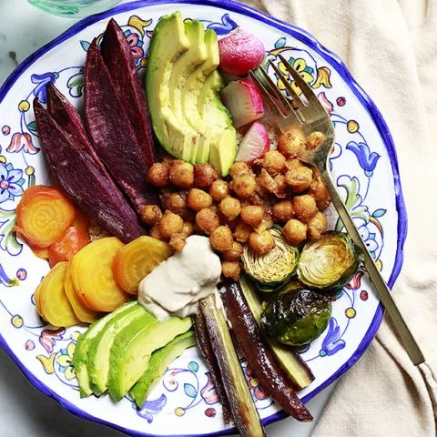

Chick Pea Buddha Bowl

Description
Crunchy curried chickpeas perfect for snacking or adding to salads and Buddha Bowls!
Ingredients
- 2 (15 oz.) cans chickpeas
- (15 oz.) cans chickpeas
- 1/2 teaspoon sea salt
- 1 teaspoon curry powder
- 2 cups cooked quinoa or other base
- fave veggies
- hummus or tahini sauce
Instructions
- Preheat oven to 400 degrees F. Drain and rinse chickpeas. Gently dry chickpeas until they are no longer wet and shiny. On a baking sheet, toss chickpeas with olive oil and salt to coat. Roast for 25 minutes, or until crisp. Toss with curry powder and enjoy warm!
Preheat oven to 400 degrees F. Drain and rinse chickpeas. Gently dry chickpeas until they are no longer wet and shiny. On a baking sheet, toss chickpeas with olive oil and salt to coat. Roast for 25 minutes, or until crisp. Toss with curry powder and enjoy warm!
Nutrition Information
Amount Per Serving: CALORIES: 469TOTAL FAT: 21gSATURATED FAT: 3gTRANS FAT: 0gUNSATURATED FAT: 17gCHOLESTEROL: 17mgSODIUM: 504mgCARBOHYDRATES: 54gFIBER: 10gSUGAR: 6gPROTEIN: 19g